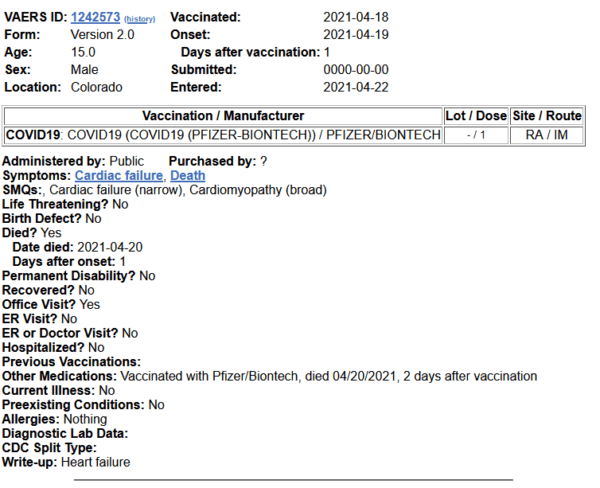

Здоровый 15-летний подросток умер после вакцинации Pfizer
всего 15-летний мальчик, ох ты
Posted On: 2021-05-03T13:35:30
Posted By: maxho
Неудачный выбор времени вакцинации.Если смотреть по 'Стеллариуму', то 19-е апреля — приходится ровно на время максимума Высокой Луны, когда Луна находится в 'точке перегиба' над диагональю Ориона, когда восхождение Луны над плоскостью небесного экватора максимально.Пожилые и ослабленные люди умирают чаще в районе точке максимума Высокой Луны и не менее чаще — в зоне максимума Низкой Луны.Суть в том, что организм повергается некой невидимой и неощущаемой нами нагрузке, пока мы молоды.А тут случайно наложился дополнительный фактор — иммунизация.И это сыграло роль соломинки, которая сломала верблюду шею.Даром, что Луна была лишь в первой четверти.Мой шурин год назад умер в схожей ситуации.Но у него до выхода в точку максимума оставалось что-то около 3-х дней, но вот то, что и до Полнолуния оставалось дня четыре тоже сработало на отказ сердца.Меня тоже лет 30-ть назад зацепило в районе максимума Низкой Луны.После пробуждения, когда я вскочил к умывальнику, у меня начало темнеть в глазах и я понял, что секунды через 3-и явно потеряю сознание.Успел лечь на пол.Часа два в ушах слышал ускоренное биение сердца, пока не отпустило.Вот, должно быть, какой-то тромб образовался где-то в сосуде и сдерживал кровоток, что даже в лежачем положении сердце еле справлялось с доставкой кислорода в крови к органам.Ну, а потом, видимо, рассосался.
Posted On: 2021-05-03T14:39:29
Posted By: yiaman

Content Date: 2021-05-03
Download Date: 2021-09-16
Document ID: L0C04G6Z1